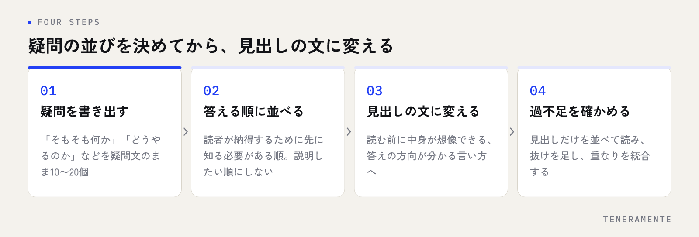

記事を書き始めてから手が止まる原因は、たいてい文章力ではありません。SEO記事の見出し構成の作り方で肝心なのは、本文を書く前に読者が答えに届く順路を決めてしまうことです。順路が決まっていれば、あとは各見出しの下を埋める作業になります。
📌 この記事の結論
見出し構成は、検索した人の疑問を書き出し、答える順に並べ替えてから見出しの文に変えると作れます。見出しを先に思いつこうとするとまとまりません。疑問の並びが先、見出しの言葉は後です。
01見出し構成とは、読者が答えに届く順路のこと
見出し構成は、記事の目次にあたる部分です。ただの区切りではなく、3つの役割を同時に持っています。
1つめは、読む前の判断材料になることです。検索して開いた人は、まず上から下へ流し読みをして「ここに答えがありそうか」を数秒で決めます。このとき読まれるのは本文ではなく見出しです。
2つめは、読んでいる途中の現在地を示すこと。長い記事でも、いまどの話をしているのかが分かれば読み進められます。
3つめは、検索エンジンにテーマの範囲を伝えることです。見出しは記事が何について書かれているかの手がかりになります。ただし、そのために見出しへキーワードを詰め込むのは逆効果です。読む人に分かる言葉であることが先に来ます。
02構成を作る前に決める3つのこと
構成を考え始める前に、紙かメモに3つだけ書き出してください。ここが曖昧なまま見出しを並べると、途中で話がぶれます。
誰の、どの段階の疑問に答えるか。同じキーワードでも、調べ始めの人と比較している人では知りたいことが違います。「やり方を知りたい人」なのか「どれを選ぶか決めたい人」なのかを1つに絞ります。
主キーワードと、答える範囲。1記事で扱う範囲を決めると、入れない話も決まります。範囲を広げすぎた記事は、どの疑問にも浅く答える形になりがちです。狙う言葉そのものの決め方はSEOキーワード選定のやり方に整理しています。
読んだ人に次に取ってほしい行動。資料を見てもらうのか、別の記事を読んでもらうのか、問い合わせてもらうのか。これが決まると最後の見出しの中身が決まります。
03見出し構成の作り方：4つの手順
手順は4つです。順番を入れ替えないでください。

見出しの言葉から考え始めない
先に見出しの文を思いつこうとすると、語感のよい言葉は並ぶものの、読者の疑問に順番に答えていない構成になります。疑問の並びを確定させてから、それを見出しの文に翻訳する。この順序を守るだけで、構成の精度が上がります。
手順1：疑問を疑問文のまま書き出す。「そもそも何か」「どうやるのか」「何から始めるのか」「いくらかかるのか」「失敗しやすいのはどこか」。検索結果の上位に並ぶ記事や、関連する検索語、実際に受けた質問から拾うと早く集まります。10〜20個出してかまいません。
手順2：答える順に並べ替える。基準は「読者が納得するために、どれを先に知る必要があるか」です。前提の説明なしに手順を読んでも手は動きません。逆に、前提の説明が長すぎると本題に届く前に離脱されます。
手順3：並びを見出しの文に変える。疑問文をそのまま見出しにせず、答えの方向が分かる言い方に変えます。「どのくらい費用がかかるか」ではなく「費用の目安と、何で金額が変わるか」のように、読む前に中身が想像できる形にします。
手順4：過不足を確かめる。見出しだけを並べて上から読み、答えが抜けているところと、2つの見出しが同じことを言っているところを探します。重なりは統合し、抜けは足します。
04使える構成の型を4つ
キーワードの種類ごとに、うまくいきやすい並びがあります。型に当てはめるというより、たたき台として使ってください。
| 型 | 向くキーワード | H2の並び |
|---|---|---|
| 手順型 | 「〜のやり方」「〜の作り方」 | 何か → 始める前に決めること → 手順 → 失敗しやすい点 → 公開後の確認 |
| 判断型 | 「〜すべきか」「〜の時期」 | 判断が必要になる場面 → 判断の基準 → 基準ごとの見方 → 迷ったときの決め方 |
| 比較型 | 「〜と〜の違い」「〜 比較」 | それぞれの定義 → 違いの一覧 → 向いている状況 → 選び方の手順 |
| 原因型 | 「〜できない」「〜が下がった」 | 起きている状態の整理 → 原因の候補 → 切り分けの順番 → 対処 → 再発の防ぎ方 |
4つのうち最も扱いやすいのは原因型です。困って検索している人は切り分けの順番を求めているため、順番を示すだけで記事の価値が立ちます。
迷ったら、自分が書くキーワードを検索して、上位の記事の見出しを書き写してみてください。並びの共通点が、その検索語で求められている順路です。そのまま真似るのではなく、共通点を押さえたうえで足りていない項目を足します。
05見出しの文の書き方
同じ構成でも、見出しの書き方で読まれ方が変わります。守る点は5つです。
- 名詞の羅列で終わらせない：「費用」より「費用の目安と、金額が変わる条件」。中身が想像できる長さにします
- 記事内で粒度を揃える：ある見出しが大きな話、隣が細かい話だと、流し読みで構造がつかめません
- キーワードを入れるのは1〜2本まで：全部の見出しに同じ語を入れると不自然になり、読みにくくなります
- 数を示せるときは示す：「確認すること」より「公開前に確認する5つのこと」。読む前に分量が分かります
- H3は、H2の中で話が2つ以上に割れるときだけ使う：見出しを増やすために使うものではありません
H2の本数は5〜8本が扱いやすい範囲です。2〜3本だと各見出しの下が長くなりすぎ、10本を超えると1本あたりが薄くなります。本数が増えすぎたときは、キーワードを分けて別記事にするほうがどちらも読まれます。
06やりがちな失敗
次の4つは、構成の段階で起きていて、本文をどれだけ丁寧に書いても直りません。
- 「はじめに」「〜とは」「まとめ」だけで組む：どの記事にも当てはまる見出しは、読む前の判断材料になりません
- 見出しと中身がずれる：書いているうちに話が広がった結果です。書き終わったら見出しを直します
- 最初の見出しが長い定義や前置きになっている：答えを探している人は前置きで離れます。定義は短く、必要な分だけ
- 1つの見出しに2つの話が入っている：「〜と〜の違いと選び方」のような見出しは、分けたほうが読みやすくなります
既存記事と構成が重なっていないかを先に確かめる
同じキーワードを狙った記事がサイト内に既にある場合、見出し構成まで似てくると、どちらも伸びにくくなります。新しく書く前に、サイト内で同じ疑問に答えている記事がないかを探してください。重なっているなら、新規で書くより既存記事に足したほうが早いことがあります。判断の仕方はブログ記事リライトのやり方にまとめています。
07公開前に、見出しだけで確認する5項目
本文を書き終えたら、見出しだけを抜き出して並べ、次の5つを確かめます。
- 見出しだけを上から読んで、記事の答えが分かるか。分からなければ、答えを含む見出しが足りていません
- 読者の疑問の順番になっているか。書き手が説明したい順になっていないかを見ます
- 同じことを言っている見出しがないか。あれば統合します
- 主キーワードが入っている見出しが1〜2本あるか。0本でも全部でも不自然です
- 最後の見出しが、読者の次の行動につながっているか。まとめで終わらせず、次に何をすればよいかを示します
この確認は、記事ページの目次を見ると早く済みます。目次は見出しから作られるため、目次がそのまま構成の点検表になります。公開後に数字を見るときも、見出し単位でどこが読まれているかを追えると直しやすくなります。
見出しに入れるキーワードは、どのくらい意識すればよいですか？
構成は、書き始める前に完成させるべきですか？
H2の本数が多くなりすぎた場合は、どうすればよいですか？
08まとめ：構成が決まれば、本文は埋めるだけになる
SEO記事の見出し構成の作り方は、疑問を書き出し、答える順に並べ、見出しの文に変え、過不足を確かめる流れです。見出しの言葉から考え始めないこと、そして公開前に見出しだけを並べて点検すること。この2つが要点になります。
構成の型は便利ですが、型に当てはめるだけでは他の記事と同じものになります。差が出るのは、自社が実際に受けている質問を疑問の一覧に混ぜられるかどうかです。検索結果からは拾えない疑問が、そこに残っています。
TENERAMENTEでは、記事の構成設計から公開後の見直しまでをサイト全体の設計とあわせてご一緒しています。サイトの作りから整える段階であればホームページ・LP制作のページをご覧いただき、何から手を入れるか迷っている段階でもお問い合わせよりお気軽にご相談ください。